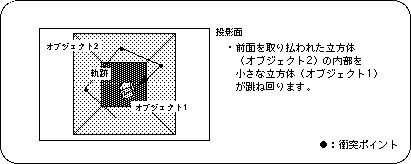
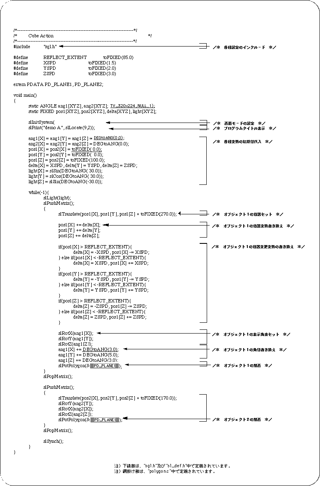
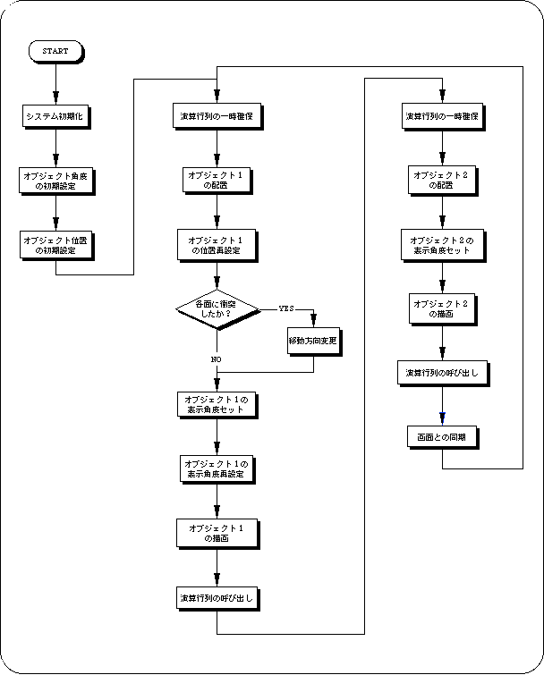

Return to previous page | Return to menu ｜ Go to next page
Here, in order to summarize the flow up to now, I will introduce a slightly complicated program that displays polygons using the functions that have appeared so far.
So far, we have explained the following:
Drawing: Polygon definition (Chapter 2) Light source: Setting of light source and change of polygonal surface by light source Coordinate system: Coordinate system in Sega Saturn (Chapter 4) Modeling conversion: Object rotation, movement, scaling, etc. (Chapter 4) Drawing area: Window and clipping (Chapter 4)
These are relatively common concepts in 3D graphics regardless of the hardware (of course the functions used are different ...).
Please read the following chapters after understanding these points.
In the following chapters, the explanation will be mainly about the Sega Saturn-specific concepts and special functions.
The demo program “demo_A” is a composite of SGL library functions that have appeared from drawing to coordinate transformation.
In the demo, small cubic polygons bouncing around a room represented by cubic polygons with all faces facing inward (not drawn when viewed from the outside).
Judgment of collision between a room and a small cube is processed by simple conditional branching (XYZ coordinate values).



In the next chapter, we will start with a hierarchical matrix and explain further details.
In particular, the concept of hierarchical structure using stacks is an important factor in 3D graphics, so please read carefully or refer to specialized books.